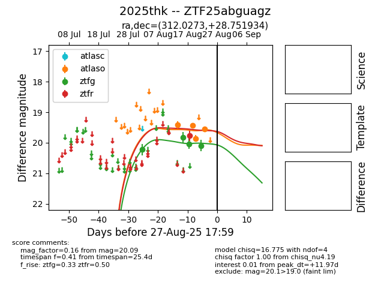

Target 2025thk at 2025-08-21 09:29, see:
FINK: fink-portal.org/ZTF25abguagz
Lasair: lasair-ztf.lsst.ac.uk/objects/ZTF25abguagz
ALeRCE: alerce.online/object/ZTF25abguagz
TNS: wis-tns.org/object/2025thk
YSE: ziggy.ucolick.org/yse/transient_detail/2025thk
alt names
ZTF25abguagz (ztf,alerce)
2025thk (tns,yse)
coordinates:
equatorial (ra, dec) = (312.0273,+28.75193)
galactic (l, b) = (72.0678,-9.26144)
photometry
last ztfg=20.03, ztfr=19.77
7 ztfg, 3 ztfr detections
